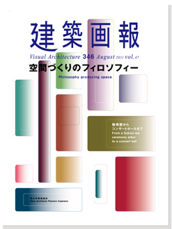
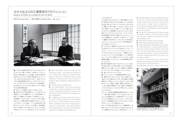
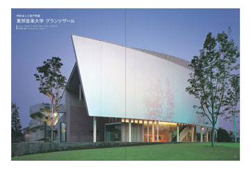
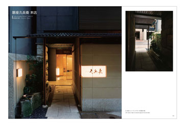
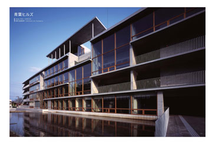
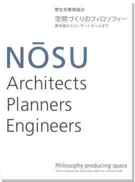

当サイトはJavaScriptをonにしてご覧ください。

建築画報
Visual Architecture 346
August 2011 Vol.47
野生司環境設計
空間づくりのフィロソフィー
数奇屋からコンサートホールまで
銀座久兵衛から東邦音楽大学グランツザールまで、近作を中心に野生司環境設計の作品をカテゴリー別にまとめた特集号。美しい写真とともに、40作品を紹介する。
写真家・村井修氏との巻頭対談のほか、松葉一清氏、内田祥哉氏、馬場璋造氏の作品レビューも掲載。
定価 3,300円（税込）
ISBN 978-4-901772-58-7
ご注文




<対談> 村井修 × 野生司義光
「父から伝えられた建築家のプロフェッション」
教育施設 －学ぶ環境をつくる－
学校法人三室戸学園 東邦音楽大学 70周年記念館
学校法人三室戸学園 東邦音楽大学 グランツザール
ヤマザキ学園大学 南大沢1号館・2号館
<論文>「現実」を「理想」に昇華する手腕 松葉一清
商業施設・オフィスビル －つどう空間をつくる－
銀座久兵衛 本店
銀座久兵衛 ホテルニューオータニ本館店
銀座久兵衛 帝国ホテル大阪店
カスタムビル
ハトヤビル3
リブレ東新宿
永田町SRビル
イトーピア日本橋SAビル
<論文> 野生司事務所の仕事 内田祥哉
福祉・保養施設 －心地よい居場所をつくる－
青葉ヒルズ
伊藤忠健保熱海伊豆山荘
<インタビュー> 暮らす人の支えとなる場所 大森順方
住宅 －住み手と共につくる－
ヴォアラクテ西早稲田
浅間山の家
赤坂テラスハウス
ファンハウス
フラットハウス
<論文> 遊び心の覚悟 馬場璋造
インテリア・デザイン監修 －空間づくりの試み－
その他の作品
エクラスタワー武蔵小杉
箸家
銀座・ラ・メイユール
ラ・フェット多摩南大沢 ろくろ・ひよこ
その他の作品
ヤマザキ動物専門学校 本校舎／ヤマザキ学園大学 渋谷１号館／江川幼稚園／月かげ幼稚園／スルガG5ビル／目白坂STビル／ヒルズ青山／東京清飲会館／ヒルズアサガヤ／プレステージ田園調布／セントプレイス大阪／ヴェーゼント芝の杜 ヒルトップハウス／蓼科クラブ／仙石原の家／千石の家／はるみクリニック
コンペ作品
作品データ
受賞・掲載・プロフィール
＊＊＊＊＊＊＊＊＊＊＊＊＊＊＊＊＊＊＊＊＊＊＊＊＊＊＊＊＊＊＊＊＊＊＊
建築画報 特装版

(特装版は販売終了しました）
オリジナルデザインの特装版も同時発売。
ブックデザイン アキタ・デザイン・カン
ページ 本文160頁
仕様 220×298mm
定価 4,620円（税込）
2011年8月9日発刊